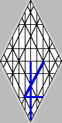

Twelve Manner of Fruits
|  |
.gif) |
.gif) |
.gif) |
| Sinaitic Hebrew | Early Greek | Uppercase | Lowercase |
Most of my life, I thought that the saying "I shall give you to eat of the Tree of Life" referred, exclusively, to some future time, but that was only when I saw mankind as having three faces: body, soul, and spirit.
The saying, that the Tree of Life has "twelve manner of fruit, in its seasons" kept nagging at my understanding. Then I realized that man has four faces, not three: that in addition to body, soul, and spirit, there is the angel. The clue, for me, was in the teachings concerning Elijah; and I wrote those thoughts down here. Then, I remembered the scripture, take care that you do not offend one of these little ones that believes in me; for their angels do always behold the face of their Father, in heaven. That means, that as I type this and as you, later, read this, our angels are looking directly at the throne in the third heaven. We're worms that die not: we're like unto caterpillars. We experience a kind of death, but no finishing end; for our angels partake of the Tree of Life that's in heaven.
If that's the case, it means that we are already eating of the Tree's fruit. Lo, and behold, the alphabets of mankind! Every note ever written and thrown away, as well as every scripture, bears witness of the fruit of the Tree! I we're accustomed to other such fruit, but there's no need to pursue the arguments. It's enough to know that, though king David is buried and in his tomb, he lives, along with so many others; and that I will one day fellowship with the saints.
And as concerning the saints, that they neither marry nor are given in marriage, but are as the angels: The angels shouted for joy at the creation of man! The reason? Mankind would give them opportunity to qualify for celestial bodies, the same celestial bodies promised those who, living and dying as man, overcome: being sustained by the nourishment that comes down from heaven at this very moment, for those to whom it is given. We're only a little lower than the angels at this present time, which is why in times past angels wed humans; and how, in this present time, those with eyes to see and ears to hear see the angels of heaven ascending and descending on the Sons of Man.
Note: "ascending" is said before "descending." Ye men of Galilee! Why stand you here, gazing into the heavens!
| Eriktology | ||
|
site |
Media Menu |
book |